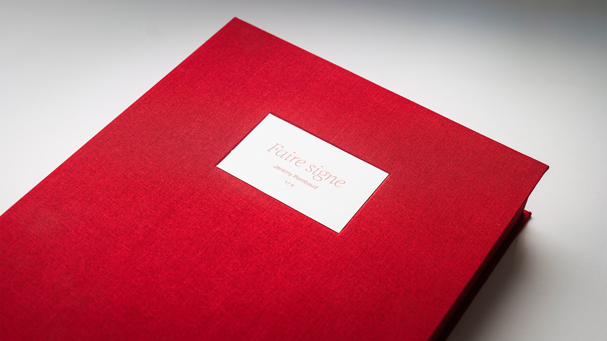
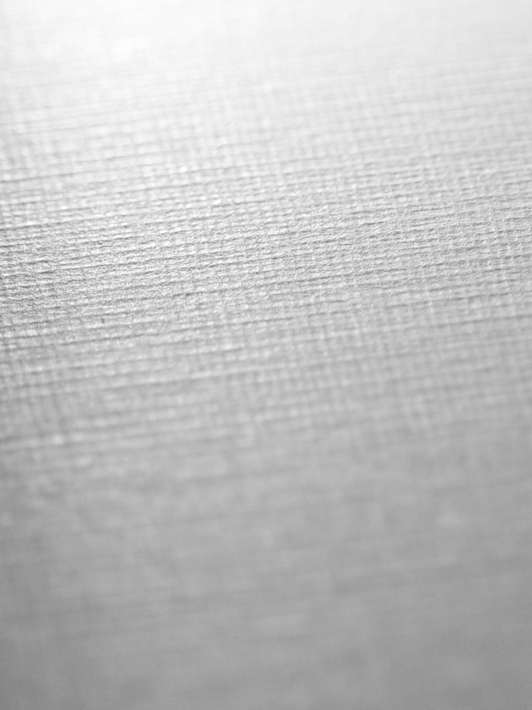
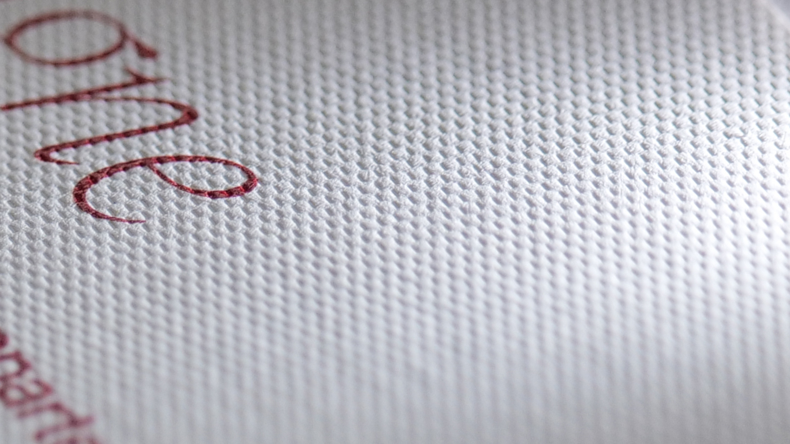
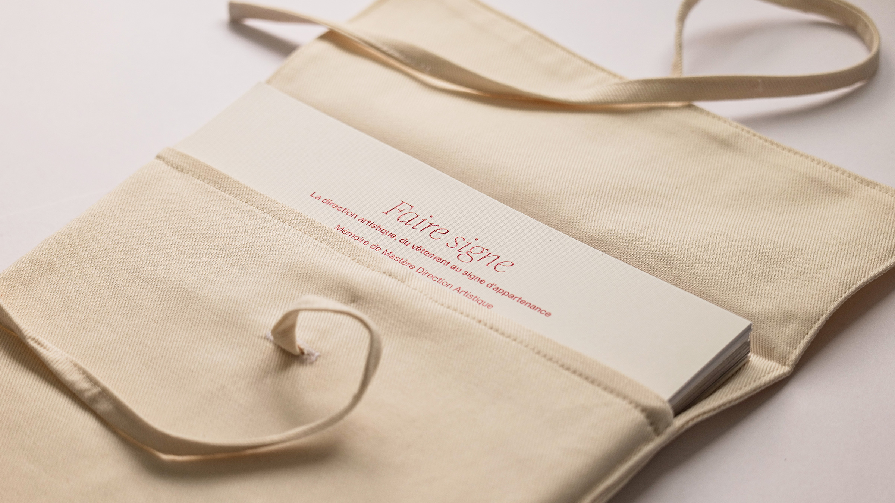
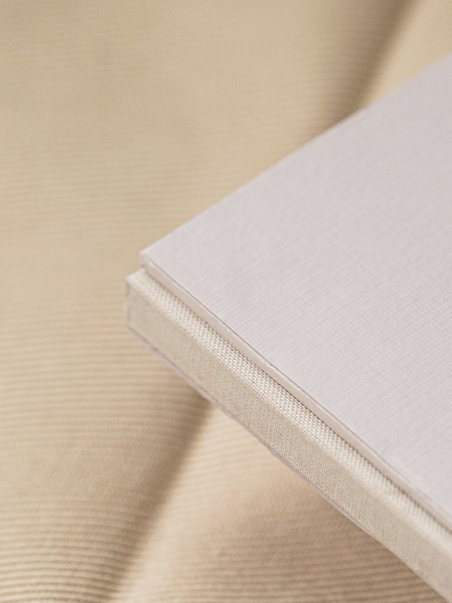
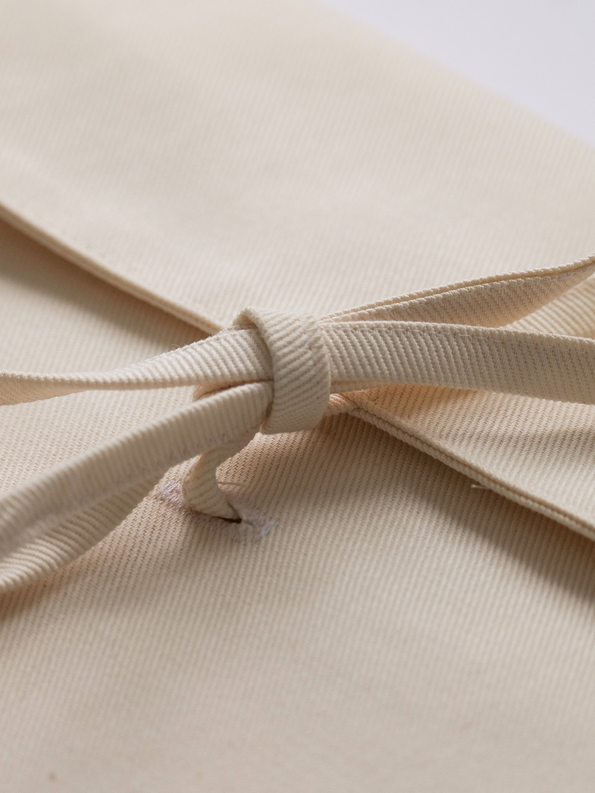

Faire signe
La direction artistique, du vêtement au signe d'appartenance
Faire signe
La direction artistique, du vêtement au signe d'appartenance
La mode me passionne depuis longtemps. J'ai voulu prendre cette passion au sérieux et l'interroger, plutôt que de la subir. De là est née la question qui traverse le mémoire : comment la direction artistique a-t-elle fait de la mode, par l'image et la communication, un signe d'appartenance ?

Approche
Chercher la réponse m'a fait remonter le fil du vêtement lui-même. Il a d'abord protégé, couvert, tenu chaud. Puis il s'est mis à dire quelque chose de celui qui le porte. Ce déplacement, du purement utilitaire au porteur de sens, ne s'est pas fait tout seul : c'est la direction artistique qui l'a rendu possible, en construisant autour du vêtement les images, les récits et les signes qui lui donnent sa valeur.
Le mémoire est pensé comme un objet éditorial autant que comme un travail de recherche. La forme n'illustre pas le propos, elle le prolonge : le choix des caractères, le rythme des pages et la fabrication du livre relèvent du même geste que l'écriture.
- Année
- 2026
- Contexte
- Mémoire de Master 2 Direction Artistique, EEGP Angers
- Rôle
- Recherche, écriture, direction artistique, édition


Terrain
La réflexion part d'un socle théorique, de Système de la mode de Roland Barthes à L'idée de la mode d'Émilie Hammen, prolongé par des références contemporaines. Sur cette base, j'ai analysé le travail de plusieurs directeurs artistiques et la façon dont chacun fait signe, à travers une étude de cas, un corpus iconographique et une frise retraçant la vague de blanding des années 2010.
Restait à confronter tout cela au terrain. Trois entretiens avec des professionnels du secteur, Tiffany Chen (Dior), Pierrick Romero (AMI Paris) et José Béreaud (Chanel Beauty), sont venus éprouver ces analyses du côté de ceux qui fabriquent ces images au quotidien.

Typographies
Les titrages sont composés en Romie, dessinée par Margot Lévêque et éditée par sa fonderie Claude Type. Le caractère est né de son envie de se rapprocher de l'héritage du Garamond sans en faire un pastiche : une romaine de titrage nourrie de calligraphie, dont les détails ne se révèlent vraiment qu'en grand corps. Dessinée en pensant aux serifs que la mode utilisait dans les années 1960, elle tombait juste pour un mémoire qui parle de vêtement, de signes et de ce qui se transmet. Merci à Margot Lévêque de m'avoir donné Romie pour ce projet.
Le corps de texte est composé en Neue Haas Grotesk Text, dessinée par Christian Schwartz d'après le dessin original de Max Miedinger. C'est la version rendue à son état de 1957, avant les simplifications qui ont donné l'Helvetica que tout le monde connaît. Sa neutralité laisse la place au propos et tient la lecture sur la longueur, ce qui compte sur un texte de cette taille.

Fabrication
Le mémoire est relié à la main en demi-toile, en quatre exemplaires : plats blancs sans débord, dos toilé. Il est protégé par une boîte à chasse en tissu rouge, réalisée avec Vincent Botasso, relieur d'art à Nice. L'impression est signée Copies Express, à Angers, en offset sur papier couché.
Le choix de la boîte n'est pas décoratif. Un mémoire qui parle de la façon dont la mode transforme un vêtement en signe d'appartenance ne pouvait pas arriver nu : dans le luxe, l'écrin fait partie du signe autant que la pièce qu'il contient. La boîte à chasse reprend le geste du coffret que l'on ouvre.
Le rouge répond au blanc des plats. Le livre reste sobre, presque muet, et c'est la boîte qui porte la couleur, celle des textiles et des packagings que les maisons emploient pour signaler la valeur. Le contraste des deux matières, toile blanche et tissu rouge, tient tout le propos en un seul objet.



Une autre hypothèse
En parallèle de la boîte à chasse, j'ai imaginé un second format : un étui souple en toile de coton écrue, fermé par un lien que l'on noue. Le livre s'y glisse comme dans une housse, et seul le titre imprimé en rouge dépasse de la bande de tissu qui le retient.
L'idée est venue du sujet lui-même. Si le mémoire parle du vêtement, l'objet pouvait en reprendre la logique : une matière textile, une couture, un lien qui se noue et se dénoue à chaque lecture. On n'ouvre pas une boîte comme on défait un nœud, le second geste demande du temps et engage la main de celui qui lit.
La toile écrue laisse la couleur au seul titre, comme sur la couverture où le rouge de la Romie tranche sur le blanc du plat. Les deux formats ne s'annulent pas : la boîte protège le livre, l'étui l'accompagne.



Du vêtement au signe d'appartenance